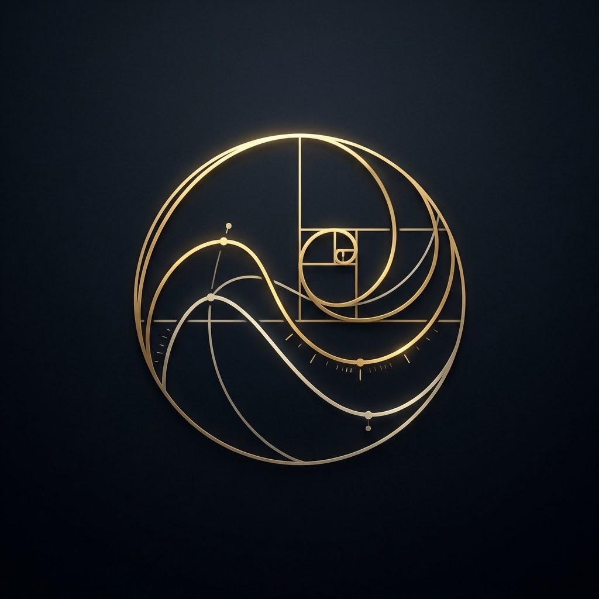

🐅 Terminal del CIO
· Balam, auditor cuantitativo de las tres velas Φ ÁUREA · BULKOWSKI
Mercado:
BTC/USDT (Bitcoin Cripto 24/7)
•
🟢 BINANCE LIVE REAL
•
Sesión continua
•
Cascada: ⚡ Antigravity (P1) → ✨ Gemini (P2) → 🤖 Qwen (P3)
BTC/USDT
|
$0.00
+0.00%
VELA (Precio) →
O: -- | H: -- | L: -- | C: --
SMA 20: --
VWAP: --
Bandas: -- / --
Vol: --
RVOL: --x
Cuadrante:
Volumen · Barras por Dirección
● Alcista
● Bajista
Vol: --
RVOL · Volumen Relativo (Base 1.0x)
⚪ NORMAL
<1.0x
≥1.0x · ≥2.0x
RVOL: --x
RSI (14) · Fuerza Relativa & Momento
⚪ ZONA NEUTRAL
Sobrecompra: 70
Sobreventa: 30
RSI: 52.40
ATR (14) · Volatilidad Real
🌊 NORMAL
Ruido (1.5x ATR): $320.00
ATR: $213.33
🛰️ Velas Sugeridas · Escaneo Monitor del Mercado
🟢 CONECTANDO...
Modo: Modo Inteligente
Último Escaneo: Sincronizando...
Cargando oportunidades asimétricas detectadas por el escáner del CIO en Monitor del Mercado...
🎯 Velas a Estudiar (Clic para Cargar Gráfico):
Cargando...
🕯️ Anatomía & Formación
🔨 Martillo Alcista (Hammer)
Sector click: Mecha Inferior
Rechazo: Mecha Inf 68%
⚡ Volumen & Confluencia RSI
RVOL 2.1 (Clímax)
Presión: Absorción Pasiva
Estado RSI (14): RSI 28.5 (Sobreventa)
🎯 Veredicto Asimétrico (Con ATR)
🟢 COMPRAR (LONG)
RATIO R:R1:2.4
SL (1.5x ATR)$64,120
TAKE PROFIT$65,850
🐅 BALAM CIO AUDITOR · GATILLO DE MERCADO
CIEGO AL FUTURO
✔ Directiva recibida en Balam (Puerto 18767). Orden registrada en la Bóveda.
WAL DB
🔍 Auditoría Histórica:
🟡 Fase A · Tesis en ese segundo (Ciego al Futuro)
Vela #--
Selecciona una vela del gráfico o haz clic en Origen, Mitad o Actual para auditar.
🔵 Fase B · Auditoría +5 velas (Diario del Lunes)
Auditoría Cuantitativa
El algoritmo evalúa si la tesis de Fase A alcanzó el Take Profit o saltó el Stop Loss en las 5 velas siguientes.